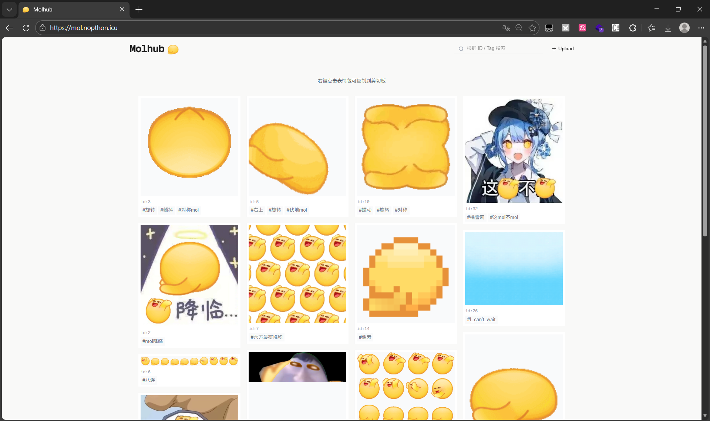
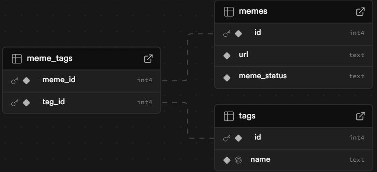
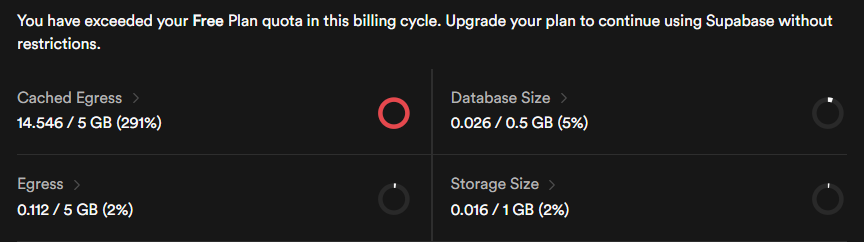

【赤石科技】Molhub
水群的时候看到了致史量的拜谢表情包，憋不住了所以让 LLM 搓个了 Molhub
【Update】这网站已经似了
因为我没有钱，所以选择 Next.js 搭建，Vercel 部署，Supabase 存数据库和表情包文件，最后呈现的效果只能用悲剧形容

后面的内容不用看了，我瞎写的
前端
React 库是一个开源 JS 库，通过声明式语言构建 UI，非常有名（包括但不限于 React2Shell (CVE-2025-55182)）也非常好用。而 Next.js 是一个基于 React 的框架，开箱即用，省去了路由、服务端渲染、打包配置等操作，并且可以直接在 Vercel 上部署（毕竟是一家的）
React 使用 JSX / TSX（JavaScript / TypeScript XML），第一眼给我的感觉是在 Javascript 里允许直接写 HTML 语句：
| const greeting = <h1>Hello World!</h1>;
// 经过编译器转换后，其等价为
const greeting = React.createElement("h1", null, " Hello, world");
|
JSX 使得编写 React 语句（尤其是页面组件等）更加直观，从感觉上来说 React 是“用 JavaScript 去写 HTML”，但是 React 的组件功能使得写 React 相比写“JavaScript+HTML”更加逻辑紧凑
1
2
3
4
5
6
7
8
9
10
11
12
13
14
15
16
17
18 | // 定义一个 JavaScript 函数并调用
function Greet_inner(name){
return `Hello, ${name}`;
}
console.log(Greet_inner('World'));
// 在 test.jsx 中定义一个可以导出使用的 React 组件
export default function Greet({ name }) {
return <h1>Hello, {name}</h1>;
}
// 在其他文件中导入使用 React 组件，用于更方便的渲染 UI
import Greet from './test';
const App = () => {
return (
<div> <Greet name="World" /></div>
);
};
|
之前写过 TypeScript 的小组件，所以对 React 的这种前端写法有种熟悉感。给出一个页面框架，让 LLM 速通代码实现
1
2
3
4
5
6
7
8
9
10
11
12
13
14
15
16
17
18
19
20
21
22
23
24
25
26
27
28
29
30
31
32
33
34
35
36
37
38
39
40
41
42
43
44
45
46
47
48 | // 定义一些状态
STATE {
memes: Meme[] // 查询到的 mol 图数据
filtered: Meme[] // 过滤器
searchQuery: string // 搜索词
currentPage: number // 当前页码数
isLoading: boolean // 页面没加载好时贴个 Loading
isUploadModalOpen: boolean // 蹦出上传弹窗
}
// 页面载入时
ON_MOUNT {
从 Supabase 数据库获取标签为 approved 的表情包
存入 memes[]，随机排序存入 filtered
}
// 查询时
ON_SEARCH_CHANGE(query) {
按照空格分隔标签，以 OR 逻辑搜索内容
}
// ========== 交互 ==========
ON_COPY_IMAGE(url) {
请求图片并写入剪贴板
}
ON_TAG_CLICK(tag) {
点击标签时，将标签加到搜索序列中
}
ON_UPLOAD_SUCCESS() {
关闭弹窗，更新 memes[]
}
// meme 卡片小组件
COMPONENT MemeCard {
PROPS: { url, id, tags, onCopy, onTagClick }
RENDER {
// ...
}
}
// 和 Supabase 数据库进行 api 交互
API supabase {
GET /memes?status=approved {
SELECT id, url, meme_tags(tags(name))
RETURN memes[]
}
|
具体的代码实现交给 Gemini 了，LLM 真好用
后端
Supabase 是一个后端即服务（BaaS）平台，省去了写数据处理后端的步骤，通过前端调用 API 进行后端调用
Supabase 使用 PostgreSQL 进行数据库管理，建立下面的表项
1
2
3
4
5
6
7
8
9
10
11
12
13
14
15
16
17 | CREATE TABLE memes (
id SERIAL PRIMARY KEY,
url TEXT NOT NULL,
meme_status TEXT NOT NULL DEFAULT 'pending'
CHECK (meme_status IN ('pending', 'approved', 'rejected'))
);
CREATE TABLE tags (
id SERIAL PRIMARY KEY,
name TEXT UNIQUE NOT NULL
);
CREATE TABLE meme_tags (
meme_id INT REFERENCES memes(id) ON DELETE CASCADE,
tag_id INT REFERENCES tags(id) ON DELETE CASCADE,
PRIMARY KEY (meme_id, tag_id)
);
|
对应的可视化如下，其中 id 用于唯一指定表情包的标签，tag 便于搜索

与此同时建立一个 Bucket 用于存储表情包本体，在项目目录中新开一个 Upload.tsx 专门用于处理上传图片相关的操作：
1
2
3
4
5
6
7
8
9
10
11
12
13
14
15
16
17
18
19
20
21
22
23
24
25
26
27
28
29
30
31
32
33
34
35
36
37 | // 上传图片
const { error: uploadError } = await supabase.storage
.from("molmeme")
.upload(randomFileName, file); // uuid 随机文件名
// 获取 URL
const { data: { publicUrl } } = supabase.storage
.from("molmeme")
.getPublicUrl(randomFileName);
// 插入 memes 表
const { data: memeData, error: dbError } = await supabase
.from("memes")
.insert([{
url: publicUrl,
meme_status: "pending"
}])
.select()
.returns<MemeInsertResponse[]>()
.single();
// 插入 tags 表
const { data: tagData } = await supabase
.from("tags")
.upsert(
{ name },
{ onConflict: "name" }
)
.select()
.returns<TagUpsertResponse[]>()
.single();
// 同时为了方便查询，建立关联表
await supabase.from("meme_tags").insert({
meme_id: memeData.id, // 表情包 ID
tag_id: tagData.id, // 标签 Tag
});
|
部署
Next.js 和 Vercel 是同一家公司的产品。把 Next.js 的项目传到 Github，在 Vercel 上直接部署，挂上自己的域名，就可以看看成果了
只过了两天 Cached Egress（缓存出站流量）就爆了，果然免费服务什么的还是比较拮据

过几天闭站跑路吧。
{kind=link}
{kind=link}
{kind=link}